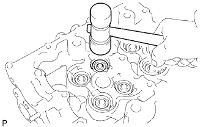

ГОЛОВКА БЛОКА ЦИЛИНДРОВ > ПОВТОРНАЯ СБОРКА |
| 1. УСТАНОВИТЕ РЕЗЬБОВУЮ ШПИЛЬКУ |
Вверните резьбовые шпильки.
| *1 | Шпильки A и B | *2 | Шпилька C |
| *3 | Шпилька D | *4 | Шпилька E |
| *a | Передняя сторона | *b | Сторона впускного коллектора |
| *c | Сторона крышки головки блока цилиндров | *d | Со стороны выпускного коллектора |
| 2. УСТАНОВИТЕ РЕЗЬБОВУЮ ЗАГЛУШКУ № 1 |
Нанесите герметик на конец каждой резьбовой заглушки № 1.
С помощью шестигранной головки на 6 мм вверните резьбовые заглушки № 1.
| *1 | Герметик | - | - |
| 3. УСТАНОВИТЕ ПОЛУКРУГЛУЮ ЗАГЛУШКУ |
Удалите все остатки старого герметика (FIPG).
Нанесите герметик на полукруглую заглушку, как показано на рисунке.
| *1 | Фиксатор | - | - |
Установите полукруглую заглушку в головку блока цилиндров.
| 4. УСТАНОВИТЕ САЛЬНИК ШТОКА ВПУСКНОГО КЛАПАНА |
С помощью SST установите новый сальник.
| 5. УСТАНОВИТЕ САЛЬНИК ШТОКА ВЫПУСКНОГО КЛАПАНА |
С помощью SST установите новый сальник.
| 6. УСТАНОВИТЕ ВПУСКНОЙ КЛАПАН |
Установите клапан, гнездо пружины, компрессионную пружину и держатель пружины.
С помощью SST сожмите пружину сжатия и установите 2 кулачка тарелки клапанной пружины на шток клапана.
С помощью пластмассового молотка слегка осадите торец штока клапана, чтобы обеспечить его надлежащую посадку.
| 7. УСТАНОВИТЕ ВЫПУСКНОЙ КЛАПАН |
Установите клапан, гнездо пружины, компрессионную пружину и держатель пружины.
С помощью SST сожмите пружину сжатия и установите 2 кулачка тарелки клапанной пружины на шток клапана.
|  |
С помощью пластмассового молотка слегка осадите торец штока клапана, чтобы обеспечить его надлежащую посадку.